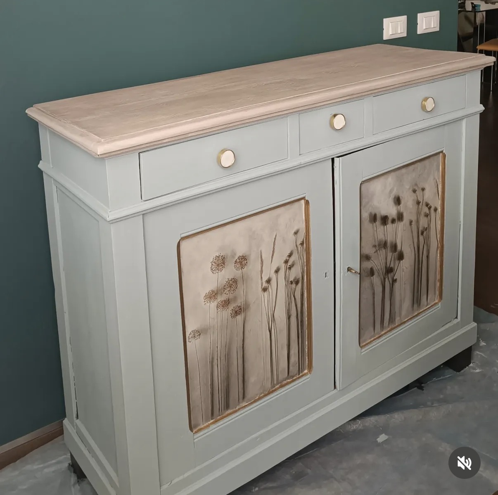
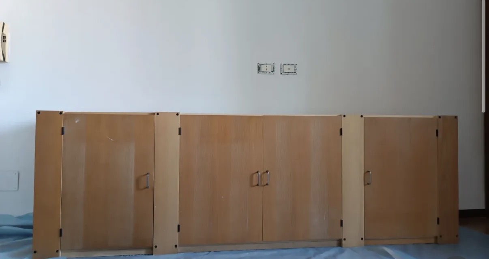

Recuperiamo mobili e oggetti, trasformandoli in pezzi unici attraverso colore, creatività e cura dei dettagli.

Dal mobile da recuperare al pezzo finito: ogni progetto nasce da un'idea diversa e viene realizzato con lavorazioni artigianali.

Ogni superficie viene studiata, preparata e reinterpretata. Colori, texture, stencil, dettagli e finiture diventano parte di una nuova identità.
Scopri il processo“Un mobile non deve essere nuovo per tornare a essere speciale.”
OG Style nasce dalla passione per il recupero creativo: dare una seconda vita a mobili e complementi, mantenendo il carattere dell'oggetto e portandolo in un ambiente contemporaneo.
Hai un mobile da trasformare o vuoi conoscere i pezzi disponibili?
Contattaci